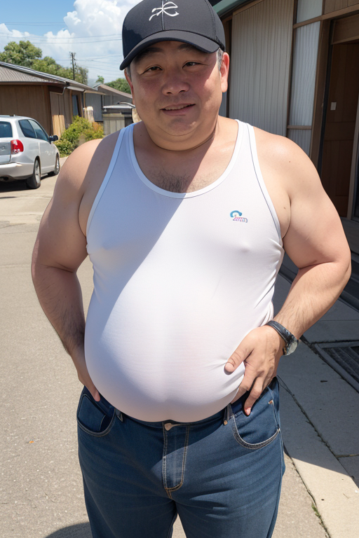
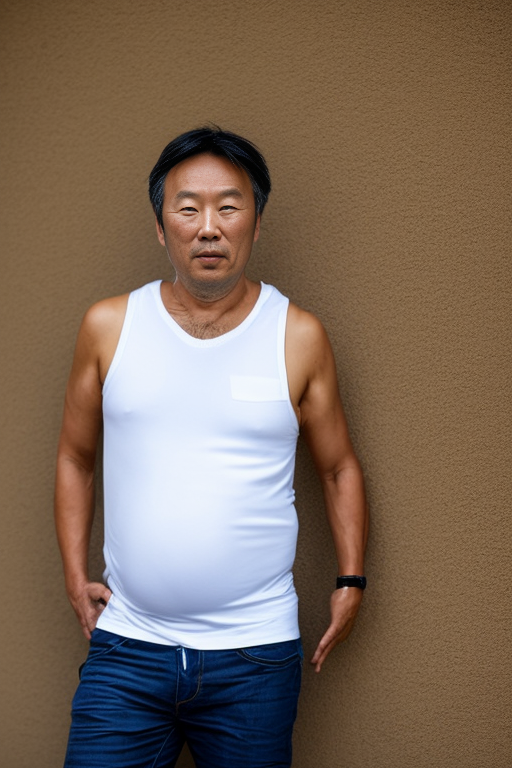

【SD1.5】おっさんの画像生成は難しい
AI絵は2次元や美少女を生成するのは難しくないが「普通のおっさん」を作るのは難しい、という話
画像生成モデルの学習データの成り立ちを想像すると、「美人」の写真を撮るのと普通の「おっさん」の写真を撮るのとでは前者のほうが社会的価値が認められているであろうから、学習画像の母数の観点では不利だと予想される。
故に、あまり学習の進んでいない「おっさん」を画像生成モデルから生成するのは簡単ではないと考えられる。
23年5月の力量でどれだけ簡単に「おっさん」を生成できるかを定性的なベンチマークとして実施する。
「おっさん」とはなんだろうか
なんとなく次のような特徴を持つ人物ということをステレオタイプとする。
- 中年以降の男性
- 年齢を重ねすぎると「おじさん」や「おじいちゃん」になる
- 若い女性から生理的に無理と言われてしまう雰囲気や格好
- 次のような身体的特徴を有する場合がある
- 髪の毛が薄毛もしくははげている
- 身体がたるんでいる
- やや肥満である
生成アプローチ
すぐに思い当たるのはこのあたり。
- 手元のモデルとプロンプトで頑張る
- 公開されているおっさんモデルや追加学習パラメータを探して組み込む
- おっさん画像を集めて自分で追加学習する
今回は簡単に作るのでプロンプトによるアプローチのみとした。
なお、生成対象は日本人の普通のおっさんとする。
主に利用するプロンプト
| 目的要素 |
プロンプト |
プロンプト(英) |
| 前提 |
日本人 |
japanese |
| 前提 |
中年男性 |
middle aged man |
| 不潔感 |
汚れている |
dirty |
| 不摂生感 |
肥満 |
fat |
| 不摂生感 |
お腹がたるんでいる |
belly is hanging out |
| 爽やかさがない |
ハゲ |
bald |
| 爽やかさがない |
にやけ面 |
smirk, half open eyes |
| 爽やかさがない |
無表情 |
Expressionless |
| 爽やかさがない |
ブサイク |
ugly |
| 爽やかさがない |
タンクトップ |
white tanktop |
生成結果
試行錯誤的に1時間ぐらいの作業時間で237枚生成した。生成結果ではその中からいくつか選定して提示する。
結果1
| Text Only |
|---|
| japanese, middle aged man, (bald:1.2), white tanktop, dirty, smirk, half open eyes, fat, (ugly:1.2), single, belly is hanging out
Negative prompt: EasyNegative, bad-hands-5
Steps: 30, Sampler: DPM++ 2M Karras, CFG scale: 7, Seed: 2129882277, Size: 512x768, Model hash: 70e66e96d7, Model: chilled_remix_v1vae, Clip skip: 2
|
結果2

| Text Only |
|---|
| japanese, middle aged man, (bald:1.2), white tanktop, dirty, smirk, half open eyes, fat, (ugly:1.2), single, belly is hanging out
Negative prompt: EasyNegative, bad-hands-5
Steps: 30, Sampler: DPM++ 2M Karras, CFG scale: 7, Seed: 2745499605, Size: 512x768, Model hash: 70e66e96d7, Model: chilled_remix_v1vae, Clip skip: 2
|
結果3
| Text Only |
|---|
| japanese, (old man:1.2), (bald:1.2), (white tanktop:1.2), dirty, Expressionless, (ugly:1.3), single, (belly is hanging out:1.2), thin eyebrows, fat, facial wrinkles
Negative prompt: EasyNegative, bad-hands-5, refreshing, (muscle:1.5)
Steps: 30, Sampler: DPM++ 2M Karras, CFG scale: 7, Seed: 2398723970, Size: 512x768, Model hash: 70e66e96d7, Model: chilled_remix_v1vae, Clip skip: 2
|
結果4
| Text Only |
|---|
| japanese, (old man:1.2), (bald:1.2), (white tanktop:1.2), dirty skin, Expressionless, (ugly:1.3), single, (belly is hanging out:1.2), thin eyebrows, facial wrinkles
Negative prompt: EasyNegative, bad-hands-5, refreshing, (muscle:1.5)
Steps: 30, Sampler: DPM++ 2M Karras, CFG scale: 7, Seed: 3700478348, Size: 512x768, Model hash: 70e66e96d7, Model: chilled_remix_v1vae, Clip skip: 2
|
結果5（タンクトップがスポブラになるパターン）
| Text Only |
|---|
| japanese, (old man:1.2), (bald:1.2), (white tanktop:1.2), dirty skin, Expressionless, (ugly:1.3), single, (belly is hanging out:1.2), thin eyebrows, facial wrinkles
Negative prompt: EasyNegative, bad-hands-5, refreshing, (muscle:1.5)
Steps: 30, Sampler: DPM++ 2M Karras, CFG scale: 7, Seed: 1286020074, Size: 512x768, Model hash: 70e66e96d7, Model: chilled_remix_v1vae, Clip skip: 2
|
結果6（生成モデル変更）

| Text Only |
|---|
| japanese, (middle aged man:1.2), (bald:1.2), (white tanktop:1.2), dirty skin, Expressionless, (ugly:1.1), single, (belly is hanging out:1.2), thin eyebrows, facial wrinkles, fat, <lora:flat2:-1>
Negative prompt: EasyNegative, bad-hands-5, refreshing, (muscle:1.5)
Steps: 30, Sampler: DPM++ 2M Karras, CFG scale: 7, Seed: 4214415218, Face restoration: CodeFormer, Size: 512x768, Model hash: fe4efff1e1, Model: sd-v1-4, Clip skip: 2
|
考察
- いくつか画像作成してみたが、やはり爽やかさを拭うことが難しく、生理的嫌悪感を醸し出すのが困難であった。
- たるんだお腹とタンクトップがうまく噛み合わず、スポブラおっさんのようになる場合が時々生じた。プロンプトで解消できる気はする。
- プロンプトに従った生成は安定しないが、「sd-v1-4」の方が「おっさん」感が出る気がする。「chilled_remix_v1vae」とは違い一般的な人物像の画像もそれなりに学習しているからと予想。
- 「sd-v1-4」だとタグ指定的なプロンプトよりは文書入力のほうが生成制御しやすいかもしれない。
- 簡単に調べた範囲だと、あまり「おっさん」生成に関する手法や学習モデルが確立されていなさそうであった。一定の需要があるかもしれない。